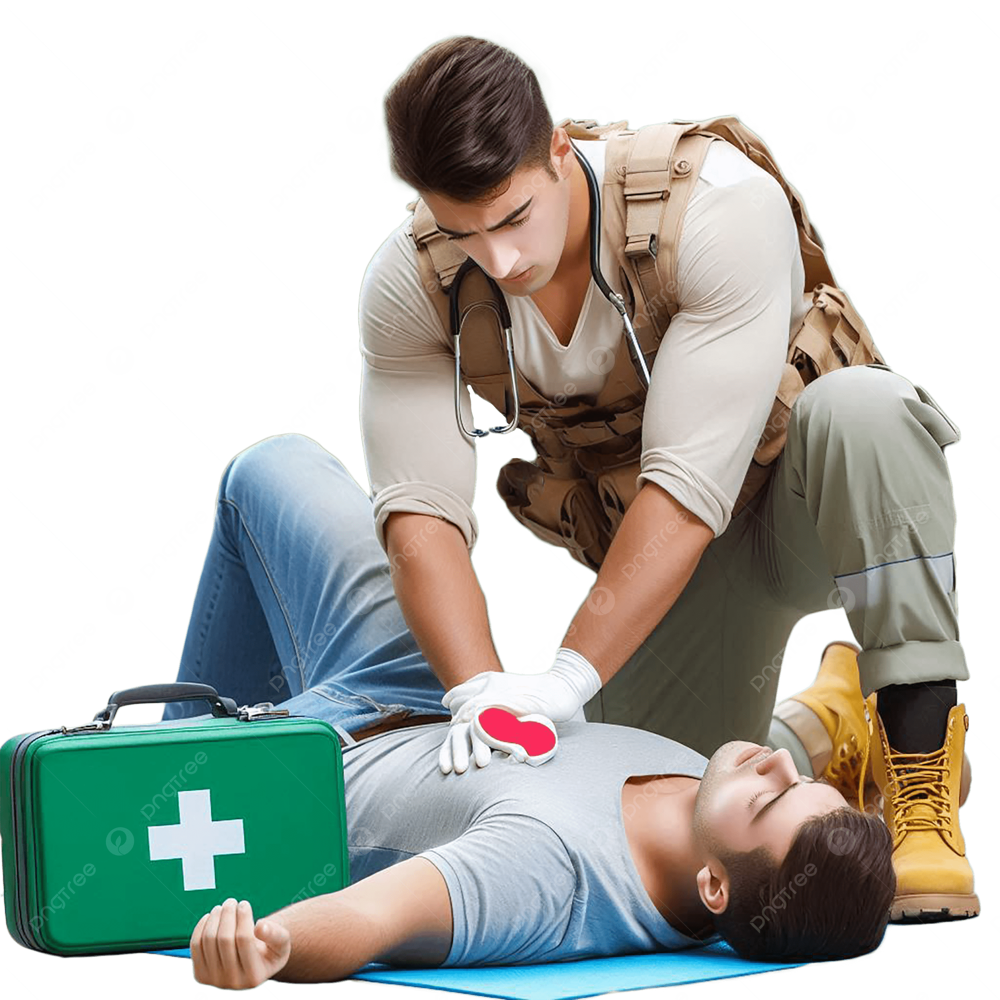

First aid refers to the immediate, initial care provided to a person who has been injured or suddenly becomes ill before professional medical help arrives.
The primary goal is not to cure the patient, but to stabilize their condition, prevent further harm, and keep them comfortable while waiting for the experts.

Immediate action drastically
increases survival rates.
Every action a first aider takes revolves around these three core, universal principles.
The absolute priority. This includes clearing airways, performing CPR, and stopping severe bleeding to keep the injured person alive.
Ensure the scene is safe. Move the patient away from active danger (like fire or traffic) and stabilize fractures to stop conditions from worsening.
Provide comfort, protect wounds from infection using sterile dressings, and reassure the patient to support the physical and psychological healing process.
Panic is contagious. Maintain your composure, take a deep breath, and quickly assess the situation before rushing into action.
Never become a second victim. Make sure the scene is completely safe for both you and the injured person before approaching.
Knowing when you are out of your depth is crucial. Call for emergency medical assistance immediately when the situation is serious.
Deliver appropriate first aid, but ensure you only act within your specific level of training to avoid causing unintended harm.